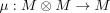
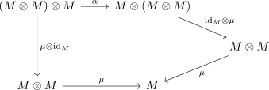
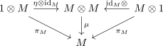

monoid object
1. Definition
Let  be a monoidal category and
be a monoidal category and  .
Then
.
Then  (with following morphisms) is said to be a monoid object, if
(with following morphisms) is said to be a monoid object, if
- there exists a morphism for the tensor unit

- there exists a morphism

, called the multiplication functor - associativity holds, i.e.

for the associator 
- the diagram

commutes